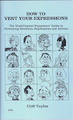

Communicate without words!
3/11/2009
{kind=link}

How To Vent Your Expressions is the complete guide to portraying Emotions, Expressions and Actions! Bring your ventriloquist figure (or stage puppet) to LIFE by using this amazing reference book to learn how to manipulate your puppet or figure in the most life like manner. Simply look up the desired attitude (Anger, Ashamed, Fear, Tease, Sleep, Courage, Etc.) and follow the directions!
This is the first and only major work designed to help ventriloquists enhance the ventriloquial illusion, manipulate the figure (even the most basic figure/puppet) so as to portray every facial expression with correct body language to express any and all feelings and attitudes! Both vocal speech and body language are described in detail. HUNDREDS of topics, attitudes, emotions, actions, attitudes, and mannerisms are listed alphabetically and cross-referenced. Priceless! Written by Cliff Taylor, professional ventriloquist and instructor.
Just one of more than two dozen books I have listed now for eBay auctions ending Monday morning. See them all Here.
This is the first and only major work designed to help ventriloquists enhance the ventriloquial illusion, manipulate the figure (even the most basic figure/puppet) so as to portray every facial expression with correct body language to express any and all feelings and attitudes! Both vocal speech and body language are described in detail. HUNDREDS of topics, attitudes, emotions, actions, attitudes, and mannerisms are listed alphabetically and cross-referenced. Priceless! Written by Cliff Taylor, professional ventriloquist and instructor.
Just one of more than two dozen books I have listed now for eBay auctions ending Monday morning. See them all Here.